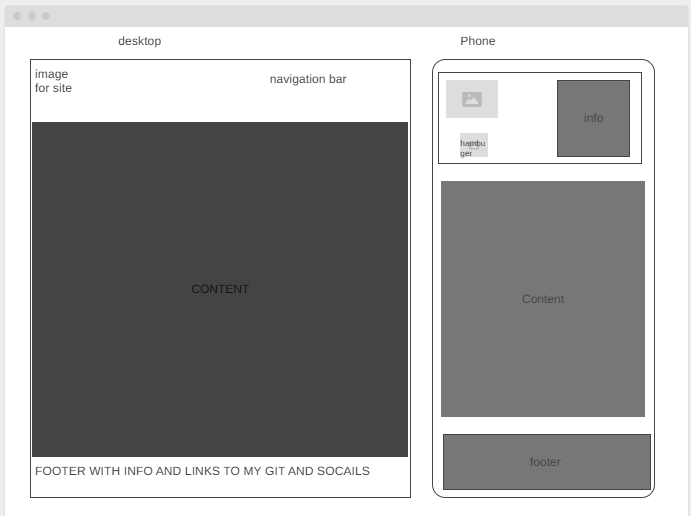

1. Site Name
Learn Coding from Scratch — This name was chosen because it clearly communicates the purpose: helping beginners start coding without prior experience.
Optional domain: learncodingfromscratch.org
2. Site Purpose
The site provides a beginner-friendly hub for learning HTML5 and JavaScript. It offers structured lessons, interactive demos, practice exercises, quizzes, and progress tracking to make coding accessible and less intimidating.
3. Scenarios
- “I've never coded before — where do I start?”
- “Can I practice writing HTML and JavaScript directly on the site?”
4. Color Scheme
Chosen colors: Blue, White, and Grey.
- Blue (#1e3a5f) — used for headings and accents.
- White (#ffffff) — used for background and body text areas.
- Grey (#cccccc) — used for secondary text and borders.
5. Typography
Selected font: Arial, sans-serif.
- Headings — bold Arial.
- Body text — regular Arial.
6. Wireframe
Homepage wireframes (mobile and desktop) are shown below:

You can also view the wireframe online here: Wireframe Link
7. Module List
- index.html (homepage)
- lessons.html (lesson pages)
- practice.html (code editor)
- style.css (styling)
- script.js (main logic)
- quiz.js (quiz functionality)
- storage.js (local storage handling)
8. Valid HTML and CSS
This document uses valid HTML5 structure and external CSS for styling. Colors and typography are applied according to the plan.